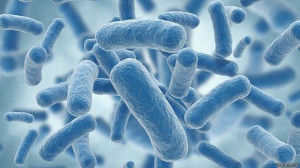

Мікробна сага: секрети суперсили
Наша з вами історія як виду нараховує сотні тисяч років . А історія бактерій вимірюється мільярдами років. І за цей час мікроби бачили все – і широченний діапазон температур та тиску, і всякі концентрації всеможливих хімічних речовин, і вихід живого на сушу, і формування континентів, і динозаврів, і птеродактилів, і гігантські папороті, і полювання наших предків на мамонтів. Тому, чесно кажучи, навряд чи пеніцилін чи, навіть синтетичні антибіотики змогли їх сильно здивувати.
Окрім того, що ми та бактерії маємо різну по тривалості історію, ми ще й, з точки зору еволюції, рухаємося з різними швидкостями. Що мається на увазі? Часовий проміжок у нас між поколіннями вимірюється десятками років, а в бактерій це десятки хвилин. Тобто умовно, поки наші діти підуть в школу, у бактерій може змінитися сотні тисяч поколінь! Наш вид навіть стільки не існує. Тому еволюція бактерії рухається просто таки із неймовірною швидкістю, яку нам навіть важко уявити!
Клітини бактерій та археїв (різниця між ними наведена ось тут) у порівнянні із клітинами нашого тіла, мають дуже просту будову . З одного боку, не на стільки просту, щоб самовпевнено стверджувати, що ми вже знаємо про них все, а з іншого – це якраз той випадок, коли простота є ознакою геніальності, бо дозволяє творити такі дикі штуки, які в складніших конструкціях були б неможливі.
Ну, наприклад, для бактерій притаманне горизонтальне перенесення генів. Ми та інші живі організми передаємо свої гени вертикально, тобто від покоління до покоління, тоді коли бактерії можуть просто підхопити з довкілля чиюсь ДНК, яка, наприклад, кодує гени антибіотикорезистентності, і використати її собі на благо, а нам – не дуже. І для цього зовсім не обов'язково, щоб бактерії були одного виду! Це, наприклад, якби ми змогли б стрибати, як кенгуру, просто з'ївши його шерсті. Магія, еге ж?
А ще мікроби мають завидний апетит та різноманітні смаки - вони радо споживають вуглекислий газ, сірководень, аміак сульфати, нітрати, залізо, феноли і навіть деякі антибіотики, які, здавалося б, мали б їх убивати! Це все тому, що у них існує широке різноманіття типів метаболізму, про які нам навіть важко помислити. Постараємося коротко і максимально просто це розкрити:
Для існування усім живим організмам необхідно отримувати енергію, вуглець та електрони . Ми отримуємо оте все із готових органічних речовин – гречаної каші, стейку чи салату з пророщених зерен. Тому ми хемоорганогетеротрофи. Розберемо: перша частинка "хемо-" - означає джерело енергії, таким чином, всі ті, хто не здатні до фотосинтезу, отримують енергію із готової органіки, є хемотрофами, а, наприклад, рослини, яким достатньо, щоб сонечко посвітило – фототрофи; друга частинка цього страшного слова означає джерело електронів і може бути "органо-" - коли джерело електронів, як у нас, органічні речовини, або "літо-" - неорганічні речовини. Третя частина конструкції – "авто-" чи "гетеро-" - говорить про джерело вуглецю – органічні чи неорганічні речовини.
Для прикладу, Ваш кактус, як представник рослинного світу – фотолітоавтотроф, бо отримує енергію від сонячного проміння, електрони – з води, а вуглець із вуглекислого газу.
І лише серед бактерій, окрім вже вище згаданих представників двох типів метаболізму, існує всіляке різноманіття хемолітоавтотрофів, хемолітогетеротрофів, фотоорганогетеротрофів, фотоорганоавтотрофів та фотолітогетеротрофів. Саме завдяки таким широким можливостям бактерії і займають цю ключову унікальну роль в геохімічних перетвореннях на нашій планеті.
Окрім того, деякі мікроби можуть змінювати свій тип метаболізму у залежності від умов середовища: є світло – фотосинтезуємо, є органіка – їмо органіку. А Вам слабо? ;)
